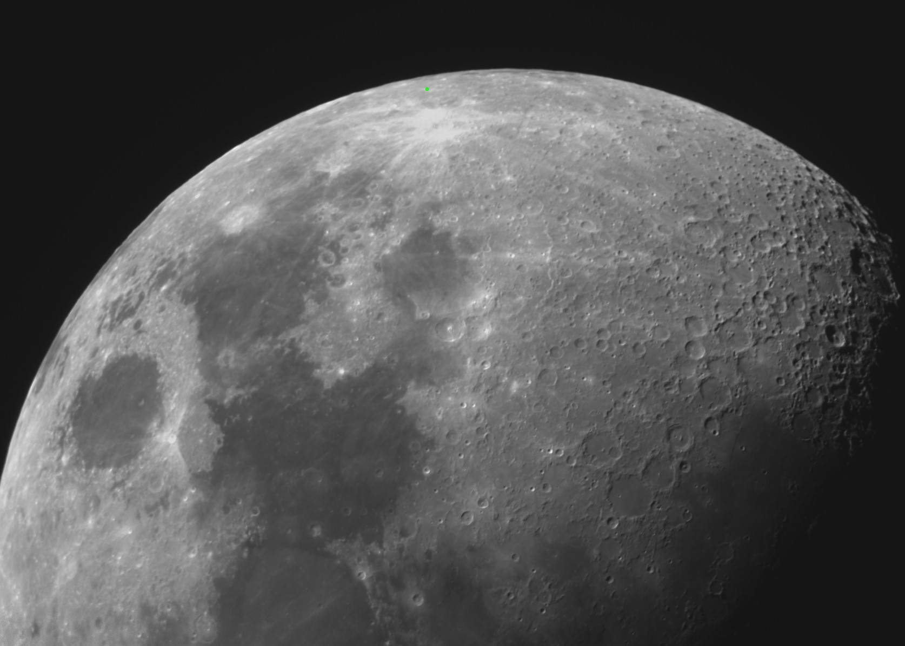

Click to enlargeMoon photo
assets/about/astronomy/moon.jpg
The Moon
YYYY / MMOne or two lines — which phase, what stood out along the terminator, why you kept this frame.
Capture details
| Telescope | NexStar 130SLT |
| Mount | Tracked |
| Camera | ZWO ASI676MC 12 MP CMOS |
| Capture | exposure, frame rate, duration |
| Processing | Autostakkart + PIPP + RegiStax 6 |
| Seeing | Slightly shaky platform |
Optional: the one thing that was hard about this shot, and what you'd do differently.